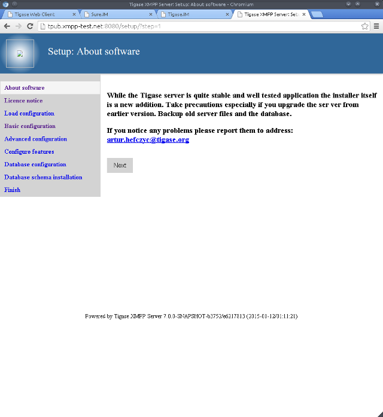
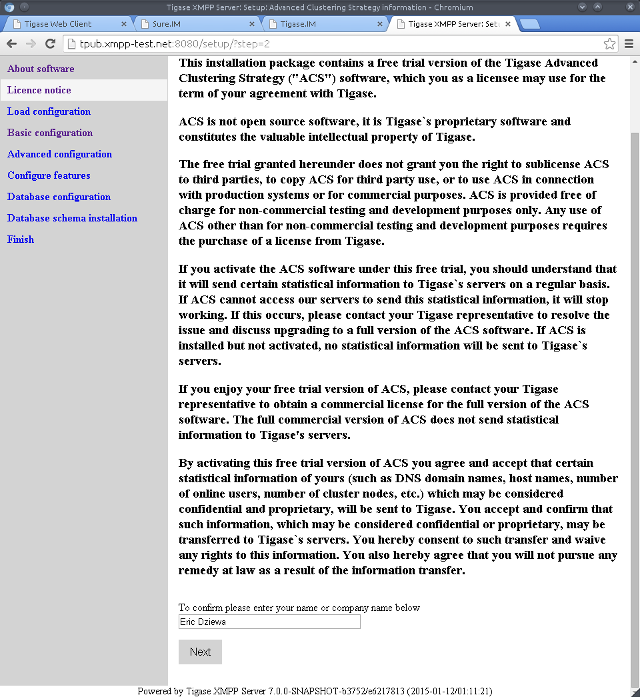
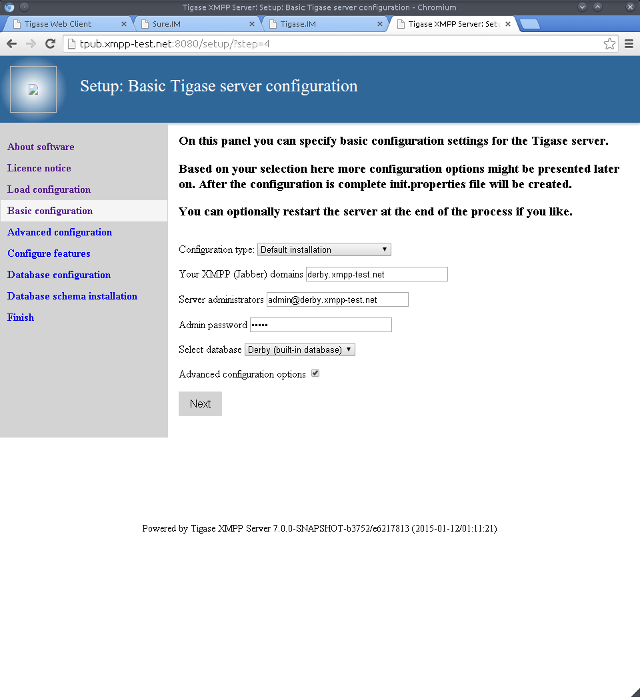
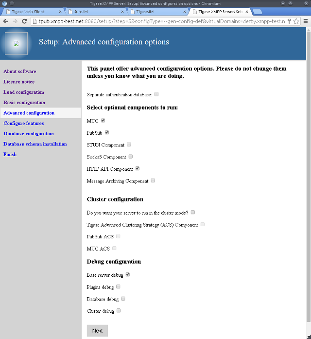
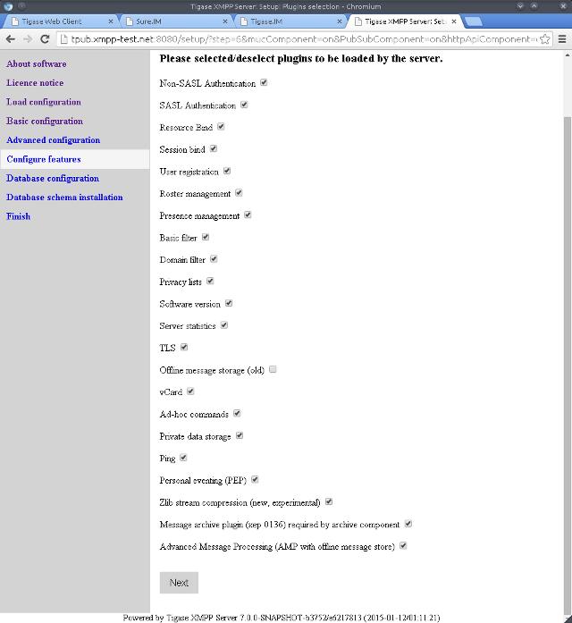
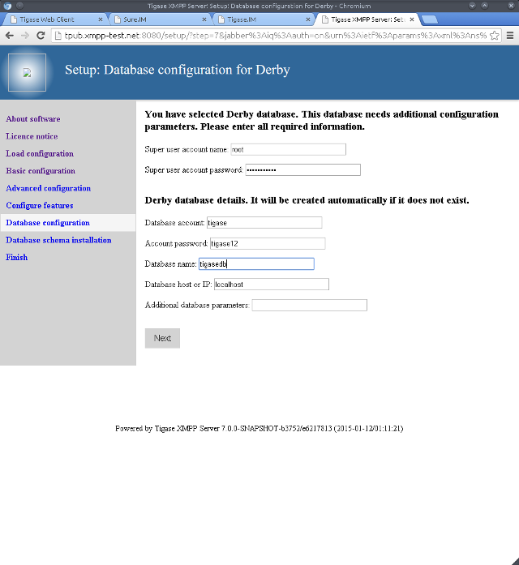
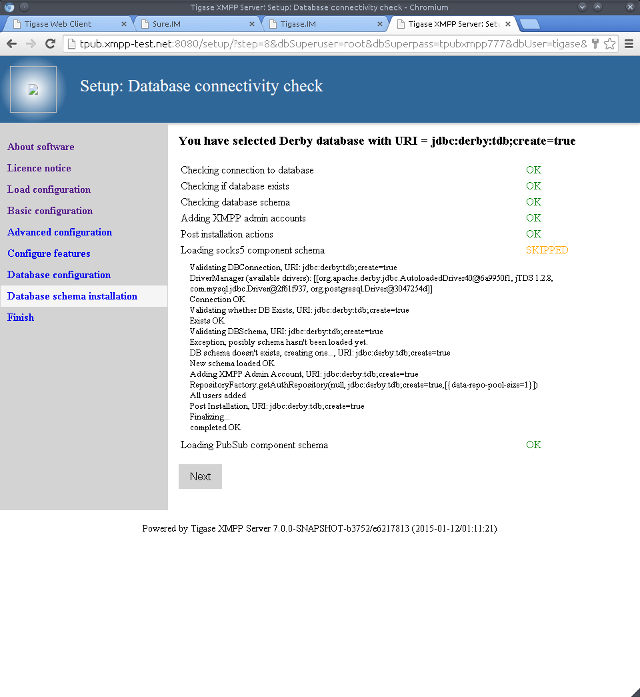
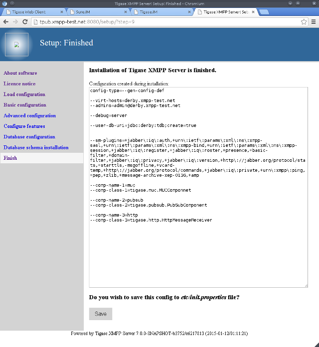
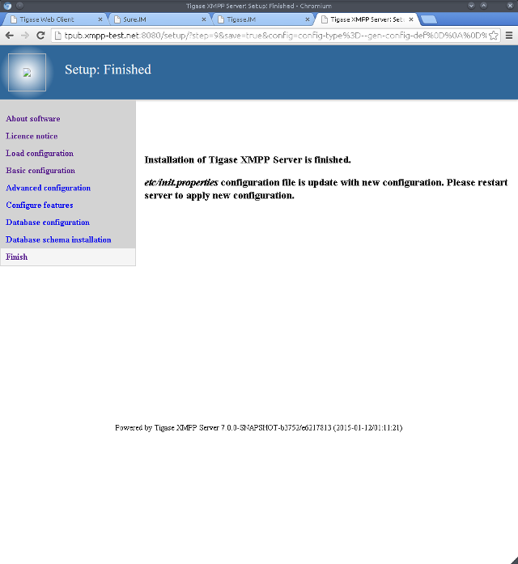

You will be greeted by the following "About software" page.

Read it and then click "Next"

Here we have the licensing page. Please read though the agreement, type your name and click "Next".

The software reads your current etc/init.properties file and presents it. Here we have a bare bones new installation. Click "Next".

Here we have the domain, database type, and admin account configuration screen. I’ve chosen Derby. Possible options are MySQL, PostgresSQL, and SQLServer. Tick the advanced box if you think you want a non standard installation.

The Advanced configuration page. Select what you need.

Plugins which will be loaded by the server.

This is where the database schema is installed.

You should see a page like this after success.

The installation is complete and this is what the new init.properties will look like. Click "Save" to write the file to disk.

Setup has finished. Go back into the installation directory and restart.
$ scripts/tigase.sh stop $ scripts/tigase.sh start
To further fine tune the server you should edit etc/tigase.conf. Ensure JAVA_HOME path is correct, and increase memory if needed using JAVA_OPTIONS -Xmx (max), and -Xms (initial). You will need to direct Tigase to read settings from this file on startup as follows.
$ scripts/tigase.sh start etc/tigase.conf
Everything should be running smooth at this point. Check the logfiles in logs/ if you experience any problems.